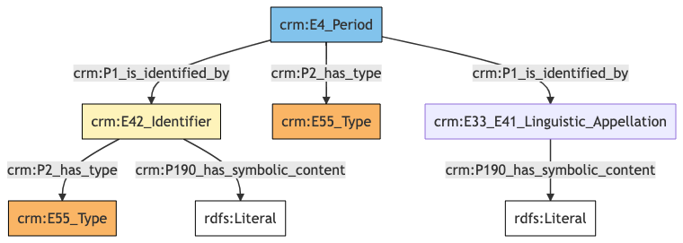
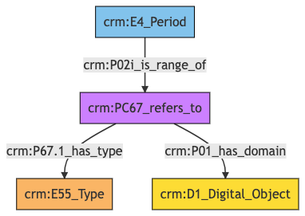

Period
Author: Denitsa Nenova, George Bruseker
Version: 1.0
The Period model is intended to enable the documentation and correct referencing of historical periods for use in datation. Typical instances of Period include period divisions of major epochs, as well as well known century divisions for periods of art history. Period is used primarily as a reference model.
| Name | URI | |
|---|---|---|
| Root Ontology Node | E4 Period | https://cidoc-crm.org/Entity/E4-Period/version-7.1.1 |
| Type Differentiator | N/A | N/A |
Model Sections Description
| Information Category | Information Collections | Description |
|---|---|---|
| Names and Classifications | Names/Alternative Names/Identifiers/Type | The researcher can document various names and classification regarding the Period . |
| Existence | Existence | The researcher can document various free text descriptions of the Period . |
| Documentation | Digital Object | The researcher can document citations relative to the period, link to images related to period and document external URIs of documentation for the same Period . |
Period Names and Classifications
The attribution of names and types to Period is a basic human activity. A chief factor in disambiguating which Period is referred to in historical texts is understanding the various names and identifiers that have been given to a Period at different moments. Likewise, additional classifiers of the Period help in the disambiguation, in an information system, of the reference to one Period from another.
| Filed ID | Name | Description | Data Type | CRM Path |
|---|---|---|---|---|
| LAF.6 | Period Name | This field is used to record the string value of the name attributed to the documented Period . | String | ->p1->E33_E41[4_1]->p190->rdf:literal |
| LAF.11 | Period Type | This field is used to record the formal type of the documented Period . | Concept | ->p2->E55[11_1] |
| LAF.10 | Period ID | This field is used to record an identifier attributed to the documented Period . | String | ->p1->E42[8_1]->p190->rdf:literal |
| LAF.9 | ID Type | This field is used to record the type of the identifier attributed to the documented Period . | Concept | ->p1->E42[8_1]->p2->E55[9_1] |
- Period Names and Classifications Ontology Graph

- Period Names and Classifications RDF
@prefix crm: <http://www.cidoc-crm.org/cidoc-crm/> .
<https://pma.us/models/period/E4> a crm:E4_Period ;
crm:P1_is_identified_by <https://linked.art/example/conceptual_object/4_1>,
<https://linked.art/example/conceptual_object/8_1> ;
crm:P2_has_type <https://linked.art/example/type/11_1> .
<https://linked.art/example/conceptual_object/4_1> a crm:E33_E41_Linguistic_Appellation ;
crm:P190_has_symbolic_content "Name_string_value" .
<https://linked.art/example/conceptual_object/8_1> a crm:E42_Identifier ;
crm:P190_has_symbolic_content "Identifier_value_content" ;
crm:P2_has_type <https://linked.art/example/identifier/9_1> .
<https://linked.art/example/identifier/9_1> a crm:E55_Type .
<https://linked.art/example/type/11_1> a crm:E55_Type .
- Period Names and Classifications JSON-LD
{
"@context": "https://linked.art/ns/v1/linked-art.json",
"@graph": [
{
"id": "https://linked.art/example/identifier/9_1",
"type": "Type"
},
{
"classified_as": [
"https://linked.art/example/identifier/9_1"
],
"content": "Identifier_value_content",
"id": "https://linked.art/example/conceptual_object/8_1",
"type": "Identifier"
},
{
"content": "Name_string_value",
"id": "https://linked.art/example/conceptual_object/4_1",
"type": "Name"
},
{
"id": "https://linked.art/example/type/11_1",
"type": "Type"
},
{
"classified_as": [
"https://linked.art/example/type/11_1"
],
"id": "https://pma.us/models/period/E4",
"identified_by": [
"https://linked.art/example/conceptual_object/4_1",
"https://linked.art/example/conceptual_object/8_1"
],
"type": "Period"
}
]
}
Period Existence
Of essential importance in identifying Periods is their timespan outlining their existence.
| Filed ID | Name | Description | Data Type | CRM Path |
|---|---|---|---|---|
| LAF.177 | Period Timespan | This field is used to link the documented temporal periodto an instance of time-span recording the temporal extent of the period. | Collection [Timespan] | ->P4->E52[177_1] |
- Period Existence Ontology Graph

- Period Existence RDF
@prefix crm: <http://www.cidoc-crm.org/cidoc-crm/> .
<https://pma.us/models/period/E4> a crm:E4_Period ;
crm:P4_has_time-span <https://linked.art/example/time_span/177_1> .
<https://linked.art/example/time_span/177_1> a crm:E52_Time-Span .
- Period Existence JSON-LD
{
"@context": "https://linked.art/ns/v1/linked-art.json",
"@graph": [
{
"id": "https://pma.us/models/period/E4",
"timespan": "https://linked.art/example/time_span/177_1",
"type": "Period"
},
{
"id": "https://linked.art/example/time_span/177_1",
"type": "TimeSpan"
}
]
}
Period Documentation
This information category unites referential information about the documented Period, providing contextual data about them.
| Filed ID | Name | Description | Data Type | CRM Path |
|---|---|---|---|---|
| PMAF.83 | Digital Object | This field is used to link to an instance of digital resource which serves as a digital reference document for the documented Period. | Reference Model [Digital Object] | ->P02i->PC67[A83_1]->P01->D1[A83_2] |
| PMAF.84 | Digital Object Type | This field is used to link to a type record which indicates the kind of reference supported by the digital resource that serves as a reference for the documented Period. | Concept | ->P02i->PC67[A83_1]->P67.1->E55[A84_1] |
- Period Documentation Ontology Graph

- Period Documentation RDF
@prefix crm: <http://www.cidoc-crm.org/cidoc-crm/> .
<https://pma.us/models/period/E4> a crm:E4_Period ;
crm:P02i_is_range_of <https://linked.art/example/reified_property/A83_1> .
<https://linked.art/example/conceptual_object/A83_2> a crm:D1_Digital_Object .
<https://linked.art/example/conceptual_object/A84_1> a crm:E55_Type .
<https://linked.art/example/reified_property/A83_1> a crm:PC67_refers_to ;
crm:P01_has_domain <https://linked.art/example/conceptual_object/A83_2> ;
crm:P67.1_has_type <https://linked.art/example/conceptual_object/A84_1> .
- Period Documentation JSON-LD
{
"@context": "https://linked.art/ns/v1/linked-art.json",
"@graph": [
{
"id": "https://linked.art/example/conceptual_object/A84_1",
"type": "Type"
},
{
"crm:P02i_is_range_of": {
"id": "https://linked.art/example/reified_property/A83_1"
},
"id": "https://pma.us/models/period/E4",
"type": "Period"
},
{
"id": "https://linked.art/example/conceptual_object/A83_2",
"type": "crm:D1_Digital_Object"
},
{
"crm:P01_has_domain": {
"id": "https://linked.art/example/conceptual_object/A83_2"
},
"crm:P67.1_has_type": {
"id": "https://linked.art/example/conceptual_object/A84_1"
},
"id": "https://linked.art/example/reified_property/A83_1",
"type": "crm:PC67_refers_to"
}
]
}